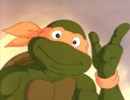

Микеланджело (англ. Michelangelo) или Майки (англ. Mikey) — один из четырёх главных героев франшизы «Черепашки-ниндзя». Он обладает наибольшим потенциалом среди всех сыновей сэнсэя Сплинтера, однако предпочитает тренировкам развлечения. Будучи самым младшим из братьев-мутантов, Микеланджело изображается как незрелый подросток, склонный к каламбурам, испытывающий любовь к скейтбордингу, обладающий чувством юмора и безграничным оптимизмом, а также большой любитель пиццы. Его фирменным оружием являются парные нунчаки, однако, в различных медиа он также орудует крюком для грэпплинга, манники-гусари, кусаригамой, тонфами и трёхсекционным боевым цепом.
Микеланджело получил более значительную роль в мультсериале 1987 года и последующих мультсериалах и фильмах, нацеленных на более молодую аудиторию, нежели серьёзные комиксы Mirage. Он выступает генератором крылатых выражений и фраз, таких как «Кавабанга!». Своё имя он получил в честь Микеланджело Буонарроти, итальянского художника эпохи Возрождения 15-го века. С первого выпуска первого тома имя Микеланджело неправильно прописывалось как «Michaelangelo». С выходом четвёртого тома имя персонажа стало соответствовать имени его тёзки. В комиксах Mirage все четыре черепахи носили красные маски, однако в дальнейшем его индивидуальным цветом стал оранжевый.